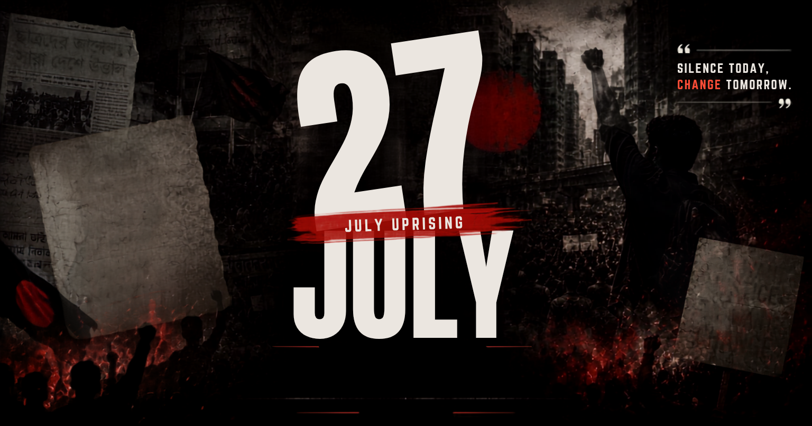

ISTIACK'S JULY CORNER
Read in Bangla / বাংলায় পড়ুন

Copy Link
Print
Select Print Language
Print in English Only
শুধুমাত্র বাংলায় প্রিন্ট করুন
Print Both / উভয় ভাষায় প্রিন্ট করুন
Copied to clipboard!
 ISTIACK'S JULY CORNER
ISTIACK'S JULY CORNER
ISTIACK'S JULY CORNER
ISTIACK'S JULY CORNER